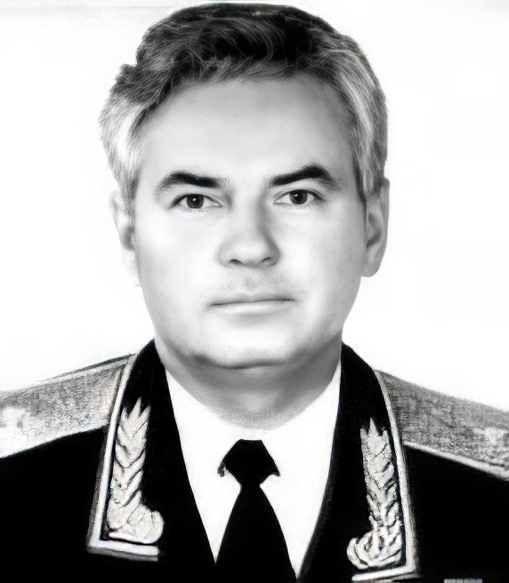

 |
Дудник Владимир Михайлович
Раздумья...
Родился 28 января 1933 года.
В 1950 г. окончил Сталинградское суворовское училище, а в 1952 г.
Ленинградское пехотное училище им. С.М.Кирова.
1952 - 1957г.г. командир взвода.
1957 - 1987г.г. на партийно-политической работе в Советской Армии.
С 1979г. проходил службу в органах стратегического руководства
Вооруженных Сил на уровне военного округа.
Последняя армейская должность - начальник кафедры
партийно-политической работы и партийного строительства в Вооруженных
Силах в Военно-политической академии им. В.И.Ленина: сентябрь 1987г. -
март 1991г., кандидат педагогических наук (защитился в войсках),
доцент.
С 1957г. член КПСС, из партии не выходил.
Член союза журналистов с 1962г.
В период перестройки негласно сотрудничал с газетами
"Известия" и "Московские новости".
С 1991г. военный консультант, а в 1992-1994г.г. военный обозреватель
газеты "Московские новости".
Участвовал в создании и был членом высших руководящих органов партии
Экономической свободы (ПЭС), партии свободного труда (ПСТ).
Инициировал создание Демократического Выбора России (ДВР), но участия
в работе не принимал и членом не был.
Длительное время состоял в руководящих органах Демократической России
(ДР).
С марта 1991г. член координационного совета движения "Военные за
демократию".
С середины 1992г. сосредоточился на общественно-интеллектуальной
деятельности:
- избирался председателем общественного совета "Круглый стол
"Армия и общество";
- военный эксперт ассоциации "Гражданский мир".
В первой половине 1995г. активную партийную работу прекратил и из
партий и движений времен перестройки вышел.
Автор многочисленных трудов и статей по вопросам перестройки и
реформы Армии. По этим вопросам выступал по радио и на телевидении,
печатался в журналах: "Огонек", "Новое
время", "Человек и закон",
"Международная жизнь" и в других российских и
зарубежных средствах массовой информации.
Женат, две дочери и четверо внуков.
9.01.97г.
В.Дудник
|